Eric Schmid 2013-2016
An Homage to Martin Kippenberger
With a performance by Idea Fire Company
09/18/16, 17-17 Troutman st. #325 Ridgewood, NY 11385
"I returned to you in the other room. Your eyes were still open. When I appeared over you, your playing dead eyes repositioned their gaze on me. Your lips were glued together. I could see them weakly trying to part, pulling at the embrasure. I held your feet at first and pulled. You moved, dragging a few headlines and stuffed parts with you. When I had room to position myself behind you, I hooked under your arms, swiveled you around, and pulled you backwards into the bathroom. Your shower booth was raised and narrow, and I lifted you into it from behind. This required me to go in too, before you. Only your seated torso could fit in with me, so I released your arms to climb out. I planned to swing my leg over your slumping body and make a single, long step to the sink. Halfway out of the shower, my arms braced against two opposite walls, as I teetered in half light, I felt you grab my ankle and hold me there. Your grip was stronger than one would expect for someone in your condition. Surprised and held in this position for several seconds, unable to breathe, again the dance of flesh, smoke and disappearance with which you made up your circles flashed in my mind. With a hard flick of my foot, your hand was thrown off and dropped awkwardly in your lap. I pushed your knees into your chest, and folded you into the shower. Taking the Ivory dish soap, the only solvent or cleanser I could see, I told you, “Shut your eyes,” and covered you in the clear, stinging fluid. I turned on the shower, looked on as you began to foam, and left the bathroom. Grabbing the torso of a medium sized, pink creature from your bed I returned to you. Your eyes were still closed, and your skin had begun to emerge from beneath the black pigment oil. I took the stuffed torso that was bursting from one end with soft, synthetic fibers and used it to wipe your face and body free of the thick paint, till you were at last a faint grey. On your chest were the marks from the cactus, purple and greenish, as well as several cigarette burns, and a small hole in your shoulder. When I had finished and stood up, though your eyes remained closed, you spoke, murmuring, “Make sure you send all my pens to the pen man.” I turned off the shower and looked for a towel for you, but all I could find was a used sheet hanging on your wall. I put it on you and tucked it behind your shoulders with great effort, because though you were alive, your weight was still dead. “Eric,” I said, not sure why. Perhaps it was a simple reminder for both our benefit. At this your eyes opened wide, and you began to laugh. “So the people have spoken! They want my approval! I approve! I approve!” You coughed, sinking back into the plastic tub that made a long screech against your tacky skin. In the mirror I saw I was as black as you. The chill of the rigid, green coma, which you remained in for several days I am told, was settling in my bones"
(An excerpt from "Our Friend Eric" by Rachelle Rahme)

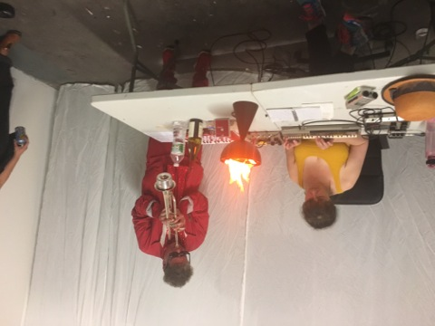
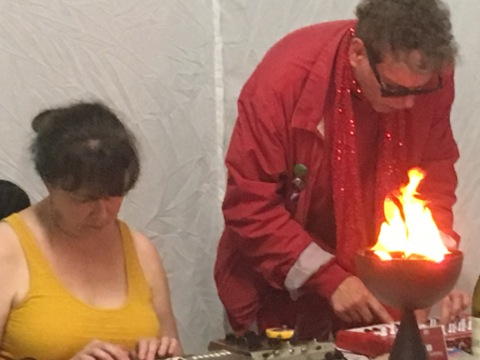
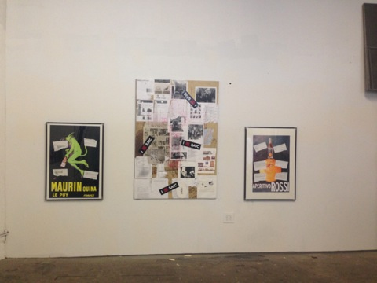
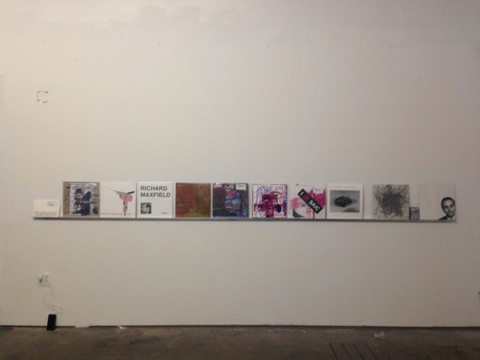

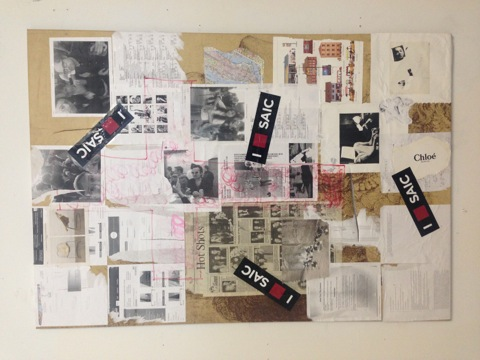
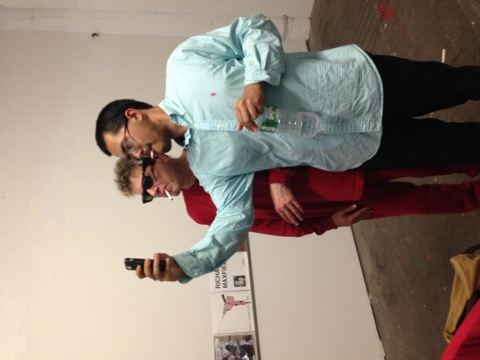
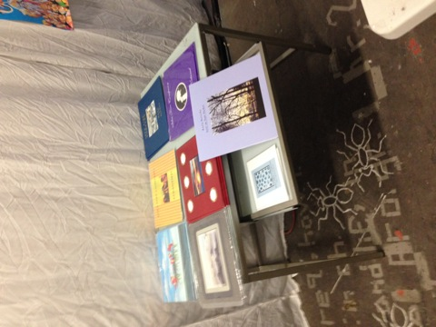
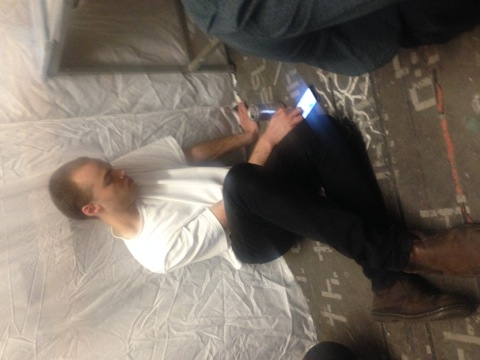
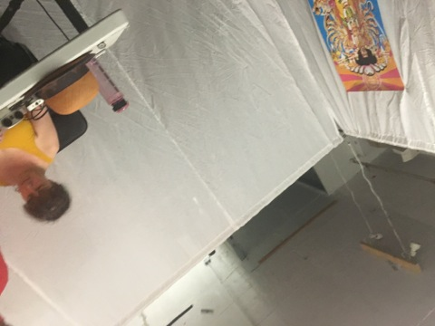
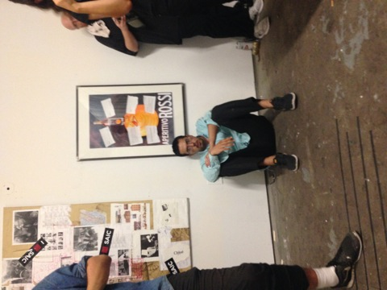
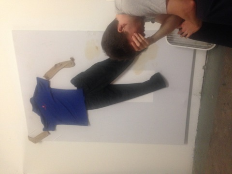
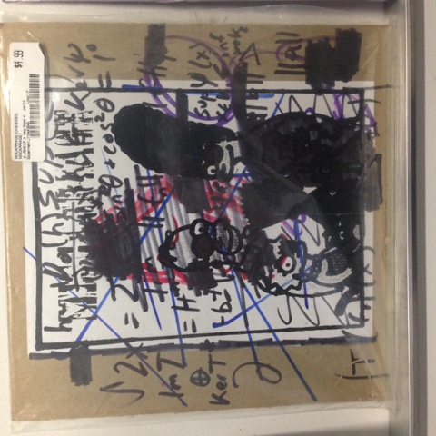
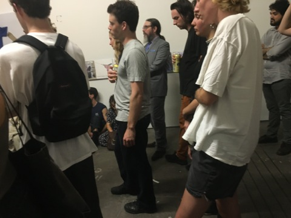
.JPG)